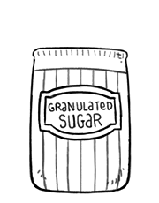

granulated sugar
Granulated sugar, also known as table sugar, white sugar or or regular sugar, is sugar made from refined natural brown sugar. The sugar is processed to strip it of molasses. People may choose white sugar because it imparts less color, and less flavor than natural brown sugar.
The average person consumes about 24 kg of sugar per year, which is about 260 calories per day. Sugar is not essential to good health, and should be eaten sparingly.
Weight: 1 cup | 7 oz | 198 g
natural brown sugar
Natural brown sugar(or whole cane sugar) is extracted from sugarcane, then treated to remove impurities. The resulting juice is boiled, and as it cools the liquid crystallizes to produce sugar crystals. Natural brown sugar is less processed and retains more molasses, giving it a distinctive dark color and deepening its flavor. It differs from commercial brown sugar which is white sugar with molasses added back in.
There are many sub categories of 'natural brown sugars' with different characteristics such as: turbinado, demerara or raw sugar. Natural brown sugars that are mildly centrifuged(refined) include panela, rapadura, jaggery, muscovado, piloncillo etc.
Whole cane sugar has more nutritional value than white sugar because of the molasses, but sugar is sugar and it is not essential to good health.
Weight: 1 cup | 7 3/4 oz | 220 g